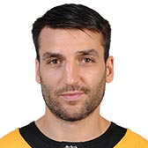
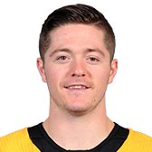
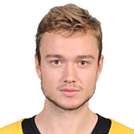
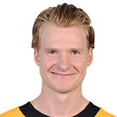
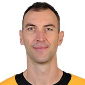
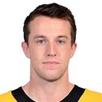
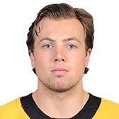
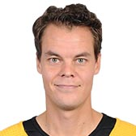

BRUINS
| Photo |
Name |
Number |
Position |
Shot |
Height |
Weight |
Birthday |
Hometown |
|
Noel Acciari |
55 |
C |
R |
5' 10" |
208 |
Dec 1, 1991 |
Johnston, RI, USA |
|
David Backes |
42 |
RW |
R |
6' 3" |
215 |
May 1, 1984 |
Minneapolis, MN, USA |
|  |
Patrice Bergeron |
37 |
C |
R |
6' 1" |
195 |
Jul 24, 1985 |
Ancienne-Lorette, QC, CAN |
|
Jake DeBrusk |
74 |
LW |
L |
6' 0" |
185 |
Oct 17, 1996 |
Edmonton, AB, CAN |
|  |
Ryan Donato |
17 |
C |
L |
6' 0" |
193 |
Apr 9, 1996 |
Boston, MA, USA |
|  |
Jakob Forsbacka Karlsson |
23 |
C |
R |
6' 1" |
184 |
Oct 31, 1996 |
Stockholm, SWE |
|  |
Danton Heinen |
43 |
C |
L |
6' 1" |
185 |
Jul 5, 1995 |
Langley, BC, CAN |
|
David Krejci |
46 |
C |
R |
6' 0" |
188 |
Apr 28, 1986 |
Sternberk, CZE |
|
Sean Kuraly |
52 |
C |
L |
6' 2" |
213 |
Jan 20, 1993 |
Dublin, OH, USA |
|
Brad Marchand |
63 |
LW |
L |
5' 9" |
181 |
May 11, 1988 |
Halifax, NS, CAN |
|
Joakim Nordstrom |
20 |
C |
L |
6' 1" |
191 |
Feb 25, 1992 |
Stockholm, SWE |
|
David Pastrnak |
88 |
RW |
R |
6' 0" |
194 |
May 25, 1996 |
Havirov, CZE |
|
Chris Wagner |
14 |
RW |
R |
6' 0" |
198 |
May 27, 1991 |
Walpole, MA, USA |
| Photo |
Name |
Number |
Shot |
Height |
Weight |
Birthday |
Hometown |
|
Brandon Carlo |
25 |
R |
6' 5" |
212 |
Nov 26, 1996 |
Colorado Springs, CO, USA |
|  |
Zdeno Chara |
33 |
L |
6' 9" |
250 |
Mar 18, 1977 |
Trencin, SVK |
|  |
Matt Grzelcyk |
48 |
L |
5' 9" |
174 |
Jan 5, 1994 |
Charlestown, MA, USA |
|
Steven Kampfer |
44 |
R |
5' 11" |
195 |
Sep 24, 1988 |
Ann Arbor, MI, USA |
|
Torey Krug |
47 |
L |
5' 9" |
186 |
Apr 12, 1991 |
Livonia, MI, USA |
|  |
Charlie McAvoy |
73 |
R |
6' 0" |
208 |
Dec 21, 1997 |
Long Beach, NY, USA |
|
Kevan Miller |
86 |
R |
6' 2" |
210 |
Nov 15, 1987 |
Los Angeles, CA, USA |
|
John Moore |
27 |
L |
6' 2" |
210 |
Nov 19, 1990 |
Winnetka, IL, USA |
| Photo |
Name |
Number |
Height |
Weight |
Birthday |
Hometown |
|
Jaroslav Halak |
41 |
5' 11" |
185 |
May 13, 1985 |
Bratislava, SVK |
|  |
Tuukka Rask |
40 |
6' 3" |
176 |
Mar 10, 1987 |
Savonlinna, FIN |